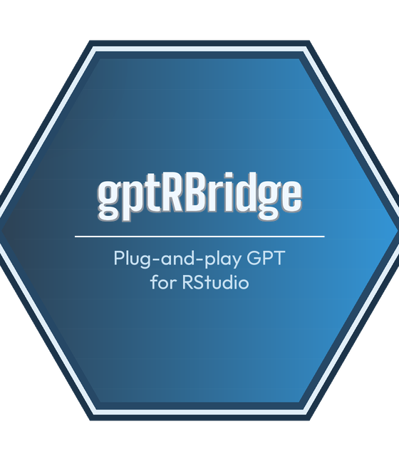

gptRBridge: AI inside RStudio, without the setup friction
Nikolai Alexander
2026-03-27
Source:vignettes/gptRBridge-introduction.Rmd
gptRBridge-introduction.RmdThe problem with using AI in an R workflow
If you’ve tried to integrate AI assistance into your R work, you’ve probably settled into some version of this loop:
You hit a problem. You open a browser tab, describe the issue, get a code suggestion, copy it into RStudio, run it, get an error, copy the error back into the browser, get a fix, copy that back into RStudio. The plot renders but the colors are wrong. Back to the browser. Adjust. Copy. Run. Repeat…
It works, but it’s friction. Constant context switching, constant clipboard management. For exploratory or iterative work, the kind R is actually used for, this loop adds up fast.
Why existing packages don’t fully solve it
The gap I kept running into was simple: I wanted something I could install and use immediately, where the AI panel lived inside RStudio rather than next to it.
There are good options in this space already. gptstudio
is probably the closest in spirit, an RStudio addin with a chat
interface, and it’s excellent if you’re comfortable setting up API
credentials. ellmer and gander are worth
knowing too, especially if you want to build LLM workflows into your own
scripts. gptRBridge does one thing differently: there’s no
setup. No API key, no provider account, no .Renviron. You
install, register, and start. If you already have an API key and a
preferred provider, the existing tools may serve you better.
But the no-setup approach isn’t the only difference. Once you’re inside RStudio, the workflow changes too.
What gptRBridge does
gptRBridge embeds an AI chat panel directly inside your
RStudio session. A few things make it different from opening a browser
tab:
No context switching. The AI panel lives inside RStudio alongside your code, console, and plots. You never leave your workspace, everything happens in one place.
One-click code insertion. When the AI suggests code, a single click inserts it at your cursor position in the active editor. No selecting, no copying, no pasting.
Automatic output capture. When you run code and get an output or an error, it can be captured and sent to the AI panel automatically. This is opt-in: a simple checkbox lets you switch it on or off depending on how you like to work.
How it works
When you register, your requests are routed through a managed backend that handles the AI API calls. Your RStudio session communicates with this backend, you never touch an API key or manage credentials. This is also why there’s a usage-based pricing model rather than a free-for-all: each request has a real cost on the backend, and the subscription covers it at a flat rate.
The addin itself is a standard Shiny gadget that runs inside RStudio’s viewer pane, which means it behaves like any other RStudio panel: dockable, resizable, and always visible alongside your code.
The result is that the conversation between you and the AI and the conversation between you and R happen in the same place, with the same context, without you manually transferring information between them.

Getting started
Install from r-universe:
install.packages("gptRBridge", repos = "https://nikkn.r-universe.dev")Then launch:
gptRBridge::launch_addin()Or find it under Addins → gptRBridge in the RStudio toolbar.
Create a free account:
Register with your email and password. You receive 25 free trial calls at no cost. A credit card is required for identity verification only. At the end of the free trial, you can decide if you want to subscribe for $4.99/month flat.
What’s next
This started as something I built for my own workflow, and I’m genuinely curious whether it maps to how other R users experience this problem. A few things I’m considering for future versions:
- Streaming responses (currently the panel waits for the full answer before displaying it)
- Session context awareness (the AI knowing what’s currently in your environment)
- Keyboard shortcuts for insert and capture
If you try it and have thoughts - on what works, what doesn’t, or what’s missing - I’d love to hear it!